冬の山梨である。
この日、私は河口湖方面に向かっていた。
世の中のコロナ騒ぎがヒートアップする直前で、中国からの団体さんが妙にその辺のコンビニでマスク死ぬほど買ってるなあ～、などとぼんやり見ていた。
今思えばこれがマスクの買い占めだったんだな。
で、魔王天神社である。
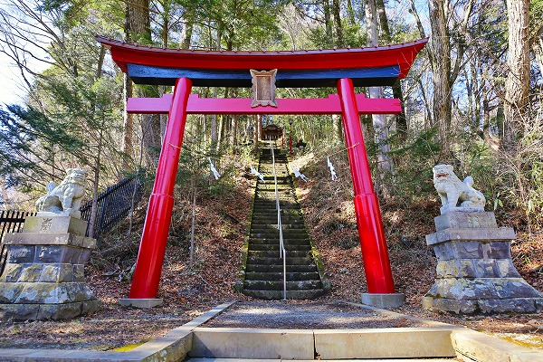
場所は河口湖の西、西湖の南に位置する。
このエリアは富士山信仰が色濃い土地で、かつて御胎内巡りや胎内樹形巡りをいそしんだ辺りだわな。
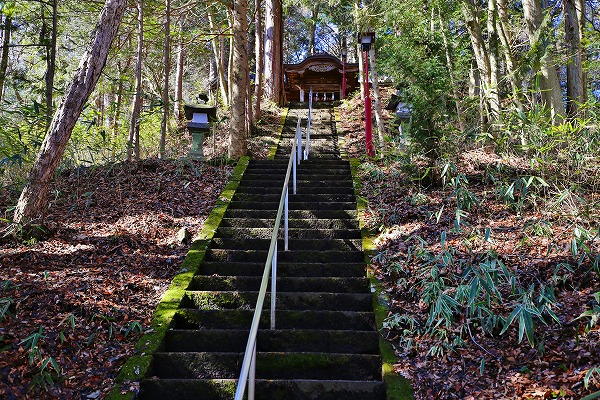
そんな魔王天神社。
急な階段を登っていく。
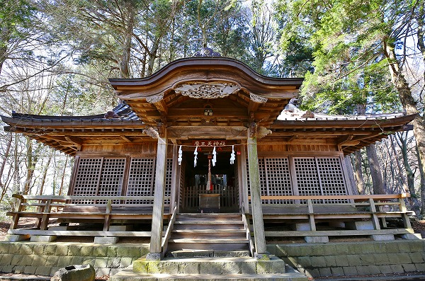
魔王天とは第六魔王天のことで、地元では風を切ってくれる神様。つまり暴風除けの神様として信仰されている。
かつて織田信長が信心していたことから、その死後、豊臣秀吉が西での信仰を一掃したため西日本にはみられないのだ、とか。
江戸末期までは関東には第六魔王天の神社が数多く存在していた。
しかし第六魔王天を妙に敵視していた明治新政府の神仏分離令によって他の神社に合祀されたりしてその数は激減したという。
時の権力者に左右されっぱなしの信仰なのである。
そんな魔王天神社、現在では訪れる人もあまり多くないようだ。
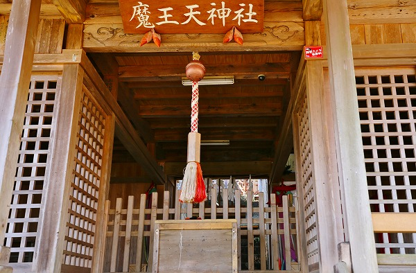
コレが魔王天神社の拝殿。
しかし、その後ろには本殿がない。
普通神社の形式としては手前に拝殿、後に本殿、という伽藍構成になっている。
裏の山が本尊になっているので本殿はない、という解釈のようだ。
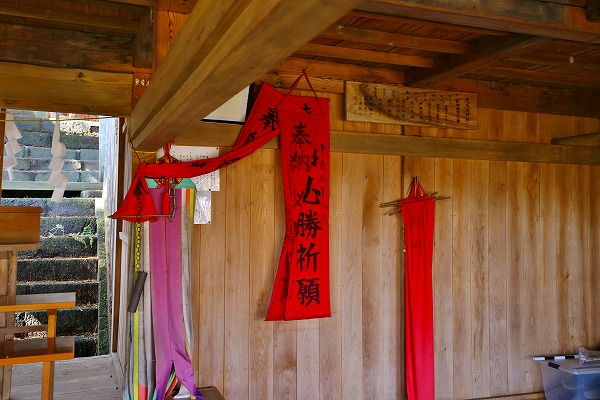
ガラーン、とした壁に必勝祈願のノボリとか大草鞋が寂しく掛けられていた。
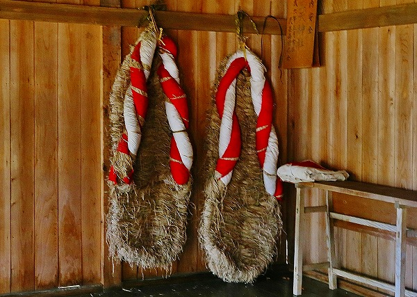
そして本来本殿があるであろう場所に「何か」が立っている。
それは…
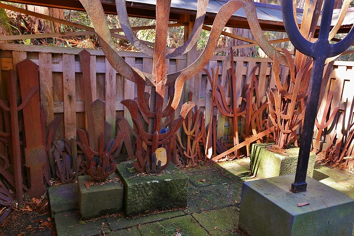
無数の鉄剣が！
短剣もあったが奉納されている剣のほとんどは三叉の剣である。
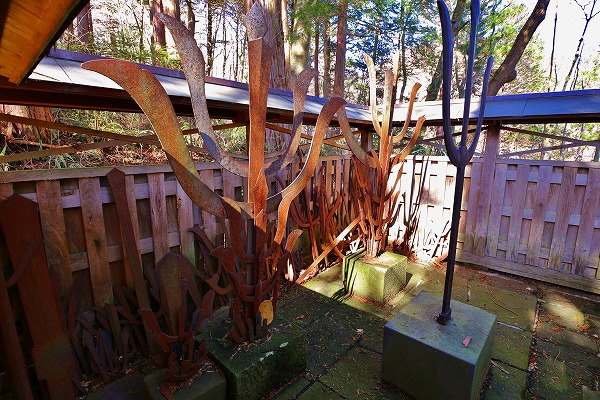
真ん中に黒い三叉戟が奉納されており、その後ろに大きな三叉戟が立っている。
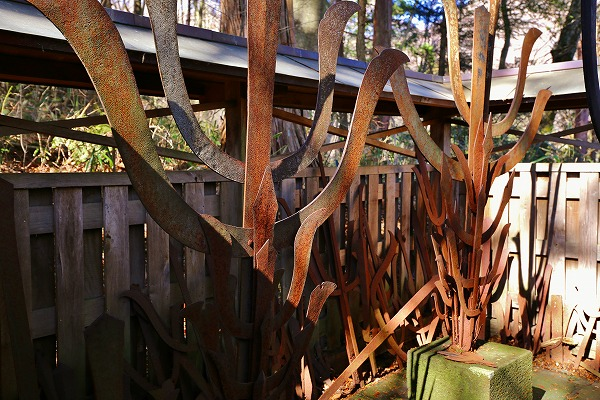
その3本の剣にまとわりつく様に小さな剣がたてかけられている。
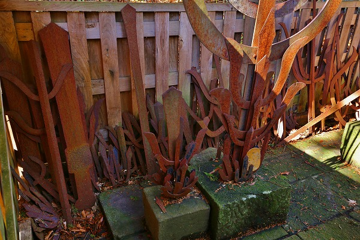
戦時中には武運長久や弾除けを祈って奉納する人も多かったという。
もちろん当時は大声では言えなかったが、何よりも生きて帰って来る事を心の中で願っていたに違いない。
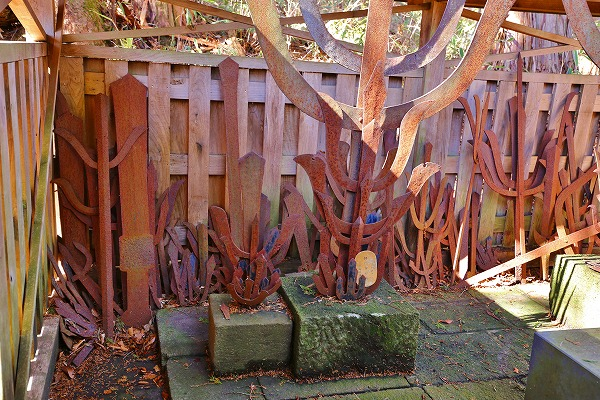
真っ赤に錆びた鉄剣にはえも言えぬ迫力が籠っている。
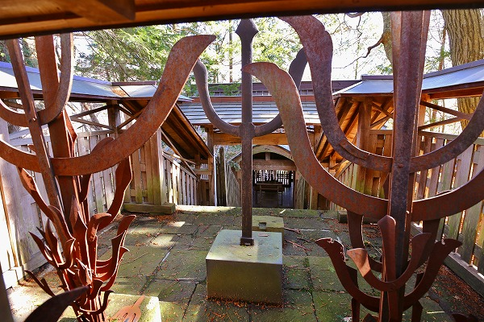
三叉の剣が幾重にも重なり炎が揺らめいているかのようだった。
何故三叉の剣が奉納されているのかは諸説あるが、良く判らない。
いずれにせよ勇ましいイメージから来るものなのだろう。
ちなみにすぐ近くに小太郎坊という小さな社があったが、それは富士山中腹にある小御嶽神社の元なのだという。
え、マジで！と思うほど小さな社だったが。
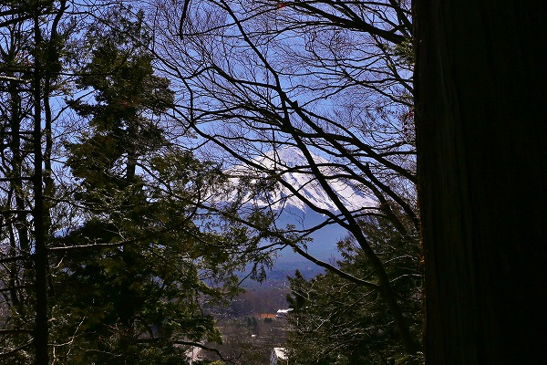
木々の間から富士山が見えた。